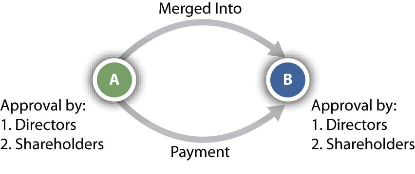
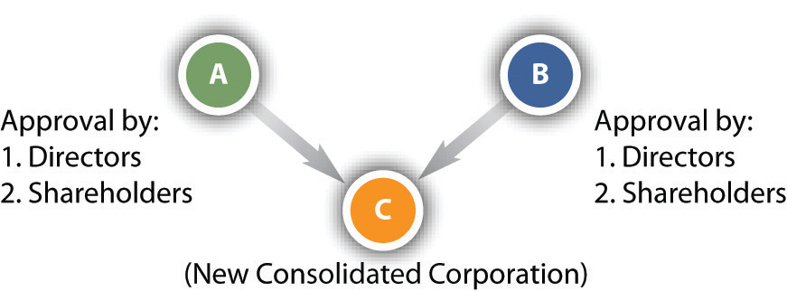

After reading this chapter, you should understand the following:
This chapter begins with a discussion of the various ways a corporation can expand. We briefly consider successor liability—whether a successor corporation, such as a corporation that purchases all of the assets of another corporation, is liable for debts, lawsuits, and other liabilities of the purchased corporation. We then turn to appraisal rights, which are a shareholder’s right to dissent from a corporate expansion. Next, we look at several aspects, such as jurisdiction and taxation, of foreign corporations—corporations that are incorporated in a state that is different from the one in which they do business. We conclude the chapter with dissolution of the corporation.
In popular usage, “mergerAny type of corporate expansion by which one corporation acquires part or all of another corporation.” often is used to mean any type of expansion by which one corporation acquires part or all of another corporation. But in legal terms, merger is only one of four methods of achieving expansion other than by internal growth.
One method of corporate expansion is the purchase of assetsOne corporation purchases the assets of another corporation in order to expand. of another corporation. At the most basic level, ABC Corporation wishes to expand, and the assets of XYZ Corporation are attractive to ABC. So ABC purchases the assets of XYZ, resulting in the expansion of ABC. After the purchase, XYZ may remain in corporate form or may cease to exist, depending on how many of its assets were purchased by ABC.
There are several advantages to an asset purchase, most notably, that the acquiring corporation can pick what assets and liabilities (with certain limitations, discussed further on in this section) it wishes to acquire. Furthermore, certain transactions may avoid a shareholder vote. If the selling corporation does not sell substantially all of its assets, then its shareholders may not get a vote to approve the sale.
For example, after several years of successful merchandising, a corporation formed by Bob, Carol, and Ted (BCT Bookstore, Inc.) has opened three branch stores around town and discovered its transportation costs mounting. Inventory arrives in trucks operated by the Flying Truckman Co., Inc. The BCT corporation concludes that the economics of delivery do not warrant purchasing a single truck dedicated to hauling books for its four stores alone. Then Bob learns that the owners of Flying Truckman might be willing to part with their company because it has not been earning money lately. If BCT could reorganize Flying Truckman’s other routes, it could reduce its own shipping costs while making a profit on other lines of business.
Under the circumstances, the simplest and safest way to acquire Flying Truckman is by purchasing its assets. That way BCT would own the trucks and whatever routes it chooses, without taking upon itself the stigma of the association. It could drop the name Flying Truckman.
In most states, the board of directors of both the seller and the buyer must approve a transfer of assets. Shareholders of the selling corporation must also consent by majority vote, but shareholders of the acquiring company need not be consulted, so Teds opposition can be effectively mooted; see Figure 29.1 "Purchase of Assets". (When inventory is sold in bulk, the acquiring company must also comply with the law governing bulk transfers.) By purchasing the assetstrucks, truck routes, and the trademark Flying Truckman (to prevent anyone else from using it)the acquiring corporation can carry on the functions of the acquired company without carrying on its business as such.For a discussion of asset purchases see Airborne Health v. Squid Soap, 984 A.2d 126 (Del. 2010).
Figure 29.1 Purchase of Assets

One of the principal advantages of this method of expansion is that the acquiring company generally is not liable for the debts and/or lawsuits of the corporation whose assets it purchased, generally known as successor liabilityThe liability of an acquiring company for the debts and/or lawsuits of the corporation whose assets it purchased.. Suppose BCT paid Flying Truckman $250,000 for its trucks, routes, and name. With that cash, Flying Truckman paid off several of its creditors. Its shareholders then voted to dissolve the corporation, leaving one creditor unsatisfied. The creditor can no longer sue Flying Truckman since it does not exist. So he sues BCT. Unless certain circumstances exist, as discussed in Ray v. Alad Corporation (see Section 29.4.1 "Successor Liability"), BCT is not liable for Flying Truckman’s debts.
Several states, although not a majority, have adopted the Ray product-line exception approach to successor liability. The general rule is that the purchasing corporation does not take the liabilities of the acquired corporation. Several exceptions exist, as described in Ray, the principal exception being the product-line approach. This minority exception has been further limited in several jurisdictions by applying it solely to cases involving products liability. Other jurisdictions also permit a continuity-of-enterprise exception, whereby the court examines how closely the acquiring corporation’s business is to the acquired corporation’s business (e.g., see Turner v. Bituminous Casualty Co.).Turner v. Bituminous Casualty Co., 244 N.W.2d 873 (Mich. 1976).
When the assets of a company are purchased, the selling company itself may or may not go out of existence. By contrast, in a merger, the acquired company goes out of existence by being absorbed into the acquiring company. In the example in Section 29.1.2 "Merger", Flying Truck would merge into BCT, resulting in Flying Truckman losing its existence. The acquiring company receives all of the acquired company’s assets, including physical property and intangible property such as contracts and goodwill. The acquiring company also assumes all debts of the acquired company.
A merger begins when two or more corporations negotiate an agreement outlining the specifics of a merger, such as which corporation survives and the identities of management personnel. There are two main types of merger: a cash merger and a noncash merger. In a cash merger, the shareholders of the disappearing corporation surrender their shares for cash. These shareholders retain no interest in the surviving corporation, having been bought out. This is often called a freeze-out merger, since the shareholders of the disappearing corporation are frozen out of an interest in the surviving corporation.
In a noncash merger, the shareholders of the disappearing corporation retain an interest in the surviving corporation. The shareholders of the disappearing corporation trade their shares for shares in the surviving corporation; thus they retain an interest in the surviving corporation when they become shareholders of that surviving corporation.
Unless the articles of incorporation state otherwise, majority approval of the merger by both boards of directors and both sets of shareholders is necessary (see Figure 29.2 "Merger"). The shareholder majority must be of the total shares eligible to vote, not merely of the total actually represented at the special meeting called for the purpose of determining whether to merge.
Figure 29.2 Merger
ConsolidationA corporate expansion similar to a merger but resulting in an entity that is an entirely new corporation. is virtually the same as a merger. The companies merge, but the resulting entity is a new corporation. Returning to our previous example, BCT and Flying Truckman could consolidate and form a new corporation. As with mergers, the boards and shareholders must approve the consolidation by majority votes (see Figure 29.3 "Consolidation"). The resulting corporation becomes effective when the secretary of state issues a certificate of merger or incorporation.
Figure 29.3 Consolidation
For more information on mergers and consolidation under Delaware law, see Del. Code Ann., Title 8, Sections 251–267 (2011), at http://delcode.delaware.gov/title8/index.shtml#TopOfPage.
The fourth method of expanding, purchase of a company’s stock, is more complicated than the other methods. The takeover has become a popular method for gaining control because it does not require an affirmative vote by the target company’s board of directors. In a takeoverAn appeal directly to the shareholders of a target corporation by offering money or other securities in exchange for the shareholders’ shares., the acquiring company appeals directly to the target’s shareholders, offering either money or other securities, often at a premium over market value, in exchange for their shares. The acquiring company usually need not purchase 100 percent of the shares. Indeed, if the shares are numerous and widely enough dispersed, control can be achieved by acquiring less than half the outstanding stock. In our example, if Flying Truckman has shareholders, BCT would make an offer directly to those shareholders to acquire their shares.
In the case of closely held corporations, it is possible for a company bent on takeover to negotiate with each stockholder individually, making a direct offer to purchase his or her shares. That is impossible in the case of large publicly held companies since it is impracticable and/or too expensive to reach each individual shareholder. To reach all shareholders, the acquiring company must make a tender offer, which is a public offer to purchase shares. In fact, the tender offer is not really an offer at all in the technical sense; the tender offerAn invitation to the shareholders of a target corporation to tender their shares for a stipulated price. Often used when a target has many shareholders. is an invitation to shareholders to sell their shares at a stipulated price. The tender offer might express the price in cash or in shares of the acquiring company. Ordinarily, the offeror will want to purchase only a controlling interest, so it will limit the tender to a specified number of shares and reserve the right not to purchase any above that number. It will also condition the tender offer on receiving a minimum number of shares so that it need buy none if stockholders do not offer a threshold number of shares for purchase.
A tender offer or other asset purchase can be financed as a leveraged buyout (LBO)The acquisition of another company using a significant amount of borrowed money to pay for the acquisition. Often, the assets of the company being acquired may be used as collateral for the loans., a purchase financed by debt. A common type of LBO involves investors who are members of the target corporation and/or outsiders who wish to take over the target or retain a controlling interest. These purchasers use the assets of the target corporation, such as its real estate or a manufacturing plant, as security for a loan to purchase the target. The purchasers also use other types of debt, such as the issuance of bonds or a loan, to implement the LBO.
For more information about tender offers and mergers, see Unocal v. MesaUnocal Corp. v. Mesa Petroleum, 493 A.2d 946 (Del. 1985). and Revlon v. MacAndrews & Forbes.Revlon, Inc. v. MacAndrews & Forbes Holdings, Inc., 506 A.2d 173 (Del. 1985). The Wall Street Journal provides comprehensive coverage of tender offers, mergers, and LBOs, at http://www.wsj.com.
Under the federal Williams Act, upon commencement of a tender offer for more than 5 percent of the target’s stock, the offeror must file a statement with the Securities and Exchange Commission (SEC) stating the source of funds to be used in making the purchase, the purpose of the purchase, and the extent of its holdings in the target company. Even when a tender offer has not been made, the Williams Act requires any person who acquires more than 5 percent ownership of a corporation to file a statement with the SEC within ten days. The Williams Act, which made certain amendments to the Securities Exchange Act of 1934, can be viewed at http://taft.law.uc.edu/CCL/34Act/. The US Constitution is also implicated in the regulation of foreign corporations. The Commerce Clause of Article I, Section 8, of the Constitution provides that Congress has power “to regulate Commerce…among the several States.”
Because officers and directors of target companies have no legal say in whether stockholders will tender their shares, many states began, in the early 1970s, to enact takeover laws. The first generation of these laws acted as delaying devices by imposing lengthy waiting periods before a tender offer could be put into effect. Many of the laws expressly gave management of the target companies a right to a hearing, which could be dragged out for weeks or months, giving the target time to build up a defense. The political premise of the laws was the protection of incumbent managers from takeover by out-of-state corporations, although the “localness” of some managers was but a polite fiction. One such law was enacted in Illinois. It required notifying the Illinois secretary of state and the target corporation of the intent to make a tender offer twenty days prior to the offer. During that time, the corporation seeking to make the tender offer could not spread information about the offer. Finally, the secretary of state could delay the tender offer by ordering a hearing and could even deny the offer if it was deemed inequitable. In 1982, the Supreme Court, in Edgar v. Mite Corp., struck down the Illinois takeover law because it violated the Commerce Clause, which prohibits states from unduly burdening the flow of interstate commerce, and also was preempted by the Williams Act.Edgar v. Mite Corp., 457 U.S. 624 (1982).
Following the Mite decision, states began to enact a second generation of takeover laws. In 1987, in CTS Corporation v. Dynamics Corporation of America, the Supreme Court upheld an Indiana second-generation statute that prevents an offeror who has acquired 20 percent or more of a target’s stock from voting unless other shareholders (not including management) approve. The vote to approve can be delayed for up to fifty days from the date the offeror files a statement reporting the acquisition. The Court concluded that the Commerce Clause was not violated nor was the Williams Act, because the Indiana law, unlike the Illinois law in Mite, was consistent with the Williams Act, since it protects shareholders, does not unreasonably delay the tender offer, and does not discriminate against interstate commerce.CTS Corporation v. Dynamics Corporation of America, 481 U.S. 69 (1987).
Emboldened by the CTS decision, almost half the states have adopted a third-generation law that requires a bidder to wait several years before merging with the target company unless the target’s board agrees in advance to the merger. Because in many cases a merger is the reason for the bid, these laws are especially powerful. In 1989, the Seventh Circuit Court of Appeals upheld Wisconsin’s third-generation law, saying that it did not violate the Commerce Clause and that it was not preempted by the Williams Act. The Supreme Court decided not to review the decision.Amanda Acquisition Corp. v. Universal Foods Corp., 877 F.2d 496 (7th Cir. 1989).
If one company acquires 90 percent or more of the stock of another company, it can merge with the target company through the so-called short-form mergerIf the one company acquires 90 percent or more of the stock of another company, it can initiate a merger without the consent of the shareholders.. Only the parent company’s board of directors need approve the merger; consent of the shareholders of either company is unnecessary.
If a shareholder has the right to vote on a corporate plan to merge, consolidate, or sell all or substantially all of its assets, that shareholder has the right to dissent and invoke appraisal rightsIf a shareholder has the right to vote on a corporate plan to merge, consolidate, or sell all or substantially all of its assets, that shareholder has the right to dissent and demand compensation.. Returning again to BCT, Bob and Carol, as shareholders, are anxious to acquire Flying Truckman, but Ted is not sure of the wisdom of doing that. Ted could invoke his appraisal rights to dissent from an expansion involving Flying Truckman. The law requires the shareholder to file with the corporation, before the vote, a notice of intention to demand the fair value of his shares. If the plan is approved and the shareholder does not vote in favor, the corporation must send a notice to the shareholder specifying procedures for obtaining payment, and the shareholder must demand payment within the time set in the notice, which cannot be less than thirty days. Fair value means the value of shares immediately before the effective date of the corporate action to which the shareholder has objected. Appreciation and depreciation in anticipation of the action are excluded, unless the exclusion is unfair.
If the shareholder and the company cannot agree on the fair value, the shareholder must file a petition requesting a court to determine the fair value. The method of determining fair value depends on the circumstances. When there is a public market for stock traded on an exchange, fair value is usually the price quoted on the exchange. In some circumstances, other factors, especially net asset value and investment value—for example, earnings potential—assume greater importance.
See Hariton v. Arco Electronics, Inc.Hariton v. Arco Electronics, Inc., 40 Del. Ch. 326; 182 A.2d 22 (Del. 1962). and M.P.M. Enterprises, Inc. v. GilbertM.P.M. Enterprises, Inc. v. Gilbert, 731 A.2d 790 (Del. 1999). for further discussion of appraisal rights and when they may be invoked.
There are four main methods of corporate expansion. The first involves the purchase of assets not in the ordinary course of business. Using this method, the purchase expands the corporation. The second and third methods, merger and consolidation, are very similar: two or more corporations combine. In a merger, one of the merging companies survives, and the other ceases to exist. In a consolidation, the merging corporations cease to exist when they combine to form a new corporation. The final method is a stock purchase, accomplished via a tender offer, takeover, or leveraged buyout. Federal and state regulations play a significant role in takeovers and tender offers, particularly the Williams Act. A shareholder who does not wish to participate in a stock sale may invoke his appraisal rights and demand cash compensation for his shares.
A foreign corporationA company incorporated outside the state in which it is doing business. is a company incorporated outside the state in which it is doing business. A Delaware corporation, operating in all states, is a foreign corporation in forty-nine of them.
States can impose on foreign corporations conditions on admission to do business if certain constitutional barriers are surmounted. One potential problem is the Privileges and Immunities Clause in Article IV, Section 2, of the Constitution, which provides that “citizens shall be entitled to all privileges and immunities of citizens in the several states.” The Supreme Court has interpreted this murky language to mean that states may not discriminate between their own citizens and those of other states. For example, the Court voided a tax New Hampshire imposed on out-of-state commuters on the grounds that “the tax falls exclusively on the incomes of nonresidents.”Austin v. New Hampshire, 420 U.S. 656 (1975). However, corporations are uniformly held not to be citizens for purposes of this clause, so the states may impose burdens on foreign corporations that they do not put upon companies incorporated under their laws. But these burdens may only be imposed on companies that conduct intrastate business, having some level of business transactions within that state.
Other constitutional rights of the corporation or its members may also come into play when states attempt to license foreign corporations. Thus when Arkansas sought to revoke the license of a Missouri construction company to do business within the state, the Supreme Court held that the state had acted unconstitutionally (violating Article III, Section 2, of the US Constitution) in conditioning the license on a waiver of the right to remove a case from the state courts to the federal courts.Terral v. Burke Construction Co., 257 U.S. 529 (1922).
Certain preconditions for doing business are common to most states. Foreign corporations are required to obtain from the secretary of state a certificate of authority to conduct business. The foreign corporation also must maintain a registered office with a registered agent who works there. The registered agent may be served with all legal process, demands, or notices required by law to be served on the corporation. Foreign corporations are generally granted every right and privilege enjoyed by domestic corporations.
These requirements must be met whenever the corporation transacts business within the state. As mentioned previously, some activities do not fall within the definition of transacting businessA minimum level of corporate activities required for a corporation to need a certificate of authority. and may be carried on even if the foreign corporation has not obtained a certificate of authority. These include filing or defending a lawsuit, holding meetings of directors or shareholders, maintaining bank accounts, maintaining offices for the transfer of the company’s own securities, selling through independent contractors, soliciting orders through agents or employees (but only if the orders become binding contracts upon acceptance outside the state), creating or acquiring security interests in real or personal property, securing or collecting debts, transacting any business in interstate commerce, and “conducting an isolated transaction that is completed within 30 days and that is not one in the course of repeated transactions of a like nature” (Revised Model Business Corporation Act, Section 15.01).
A corporation may not sue in the state courts to enforce its rights until it obtains a certificate of authority. It may defend any lawsuits brought against it, however. The state attorney general has authority to collect civil penalties that vary from state to state. Other sanctions in various states include fines and penalties on taxes owed; fines and imprisonment of corporate agents, directors, and officers; nullification of corporate contracts; and personal liability on contracts by officers and directors. In some states, contracts made by a corporation that has failed to qualify are void.
Whether corporations are subject to state court jurisdiction depends on the extent to which they are operating within the state. If the corporation is qualified to do business within the state and has a certificate of authority or license, then state courts have jurisdiction and process may be served on the corporation’s registered agent. If the corporation has failed to name an agent or is doing business without a certificate, the plaintiff may serve the secretary of state on the corporation’s behalf.
Even if the corporation is not transacting enough business within the state to be required to qualify for a certificate or license, it may still be subject to suit in state courts under long-arm statutes. These laws permit state courts to exercise personal jurisdiction over a corporation that has sufficient contacts with the state.
The major constitutional limitation on long-arm statutes is the Due Process Clause. The Supreme Court upheld the validity of long-arm statutes applied to corporations in International Shoe Co. v. Washington.International Shoe Co. v. Washington, 326 U.S. 310 (1945). But the long-arm statute will only be constitutionally valid where there are minimum contacts—that is, for a state to exercise personal jurisdiction over a foreign corporation, the foreign corporation must have at least “minimum contacts” the state. That jurisdictional test is still applied many years after the International Shoe decision was handed down.Judas Priest v. District Court, 104 Nev. 424; 760 P.2d 137 (Nev. 1988); Pavlovich v. Superior Court, 29 Cal. 4th 262; 58 P.3d 2 (Cal. 2002). Since International Shoe, the nationalization of commerce has given way to the internationalization of commerce. This change has resulted in difficult jurisdictional questions that involve conflicting policy considerations.Asahi Metal Industry v. Superior Court of California, 480 U.S. 102, 107 S.Ct. 1026, 94 L. Ed. 92 (1987).
May states tax foreign corporations? Since a state may obviously tax its domestic corporations, the question might seem surprising. Why should a state ever be barred from taxing foreign corporations licensed to do business in the state? If the foreign corporation was engaged in purely local, intrastate business, no quarrel would arise. The constitutional difficulty is whether the tax constitutes an unreasonable burden on the company’s interstate business, in violation of the Commerce ClauseProvision in the US Constitution that gives Congress the power to regulate commerce between the states.. The basic approach, illustrated in D. H. Holmes Co., Ltd. v. McNamara (see Section 29.4.2 "Constitutional Issues Surrounding Taxation of a Foreign Corporation"), is that a state can impose a tax on activities for which the state gives legal protection, so long as the tax does not unreasonably burden interstate commerce.
State taxation of corporate income raises special concerns. In the absence of ground rules, a company doing business in many states could be liable for paying income tax to several different states on the basis of its total earnings. A company doing business in all fifty states, for example, would pay five times its earnings in income taxes if each state were to charge a 10 percent tax on those earnings. Obviously, such a result would seriously burden interstate commerce. The courts have long held, therefore, that the states may only tax that portion of the company’s earnings attributable to the business carried on in the state. To compute the proportion of a company’s total earnings subject to tax within the state, most states have adopted a formula based on the local percentage of the company’s total sales, property, and payroll.
A foreign corporation is a company incorporated outside of the state in which it is doing business. States can place reasonable limitations upon foreign corporations subject to constitutional requirements. A foreign corporation must do something that is sufficient to rise to the level of transacting business within a state in order to fall under the jurisdiction of that state. These transactions must meet the minimum-contacts requirement for jurisdiction under long-arm statutes. A state may tax a foreign corporation as long as it does not burden interstate commerce.
DissolutionThe end of the existence of a corporation. is the end of the legal existence of the corporation, basically “corporate death.” It is not the same as liquidationThe process of paying creditors and distributing the assets of a corporation., which is the process of paying the creditors and distributing the assets. Until dissolved, a corporation endures, despite the vicissitudes of the economy or the corporation’s internal affairs. As Justice Cardozo said while serving as chief judge of the New York court of appeals: “Neither bankruptcy…nor cessation of business…nor dispersion of stockholders, nor the absence of directors…nor all combined, will avail without more to stifle the breath of juristic personality. The corporation abides as an ideal creation, impervious to the shocks of these temporal vicissitudes. Not even the sequestration of the assets at the hands of a receiver will terminate its being.”Petrogradsky Mejdunarodny Kommerchesky Bank v. National City Bank, 170 N.E. 479, 482 (N.Y. 1930).
See http://www.irs.gov/businesses/small/article/0,,id=98703,00.html for the Internal Revenue Service’s checklist of closing and dissolving a business. State and local government regulations may also apply.
Any corporation may be dissolved with the unanimous written consent of the shareholders; this is a voluntary dissolutionDissolution of a corporation by unanimous written consent of its shareholders.. This provision is obviously applicable primarily to closely held corporations. Dissolution can also be accomplished even if some shareholders dissent. The directors must first adopt a resolution by majority vote recommending the dissolution. The shareholders must then have an opportunity to vote on the resolution at a meeting after being notified of its purpose. A majority of the outstanding voting shares is necessary to carry the resolution. Although this procedure is most often used when a company has been inactive, nothing bars its use by large corporations. In 1979, UV Industries, 357th on the Fortune 500 list, with profits of $40 million annually, voted to dissolve and to distribute some $500 million to its stockholders, in part as a means of fending off a hostile takeover. Fortune magazine referred to it as “a company that’s worth more dead than alive.”Fortune, February 26, 1979, 42–44.
Once dissolution has been approved, the corporation may dissolve by filing a certificate or articles of dissolution with the secretary of state. The certificate may be filed as the corporation begins to wind up its affairs or at any time thereafter. The process of winding up is liquidation. The company must notify all creditors of its intention to liquidate. It must collect and dispose of its assets, discharge all obligations, and distribute any remainder to its stockholders.
In certain cases, a corporation can face involuntary dissolutionA state action to dissolve a corporation.. A state may bring an action to dissolve a corporation on one of five grounds: failure to file an annual report or pay taxes, fraud in procuring incorporation, exceeding or abusing authority conferred, failure for thirty days to appoint and maintain a registered agent, and failure to notify the state of a change of registered office or agent. State-specific differences exist as well. Delaware permits its attorney general to involuntarily dissolve a corporation for abuse, misuse, or nonuse of corporate powers, privileges, or franchise.Del. Code Ann. tit. 8, § 282 (2011). California, on the other hand, permits involuntary dissolution for abandonment of a business, board deadlocks, internal strife and deadlocked shareholders, mismanagement, fraud or abuse of authority, expiration of term of corporation, or protection of a complaining shareholder if there are fewer than thirty-five shareholders.Cal. Corp. Code § 1800 et seq. (West 2011). California permits the initiation of involuntary dissolution by either half of the directors in office or by a third of shareholders.
A shareholder may file suit to have a court dissolve the company on a showing that the company is being irreparably injured because the directors are deadlocked in the management of corporate affairs and the shareholders cannot break the deadlock. Shareholders may also sue for liquidation if corporate assets are being misapplied or wasted, or if directors or those in control are acting illegally, oppressively, or fraudulently.
Under Sections 14.06 and 14.07 of the Revised Model Business Corporation Act, a dissolved corporation must provide written notice of the dissolution to its creditors. The notice must state a deadline, which must be at least 120 days after the notice, for receipt of creditors’ claims. Claims not received by the deadline are barred. The corporation may also publish a notice of the dissolution in a local newspaper. Creditors who do not receive written notice or whose claim is not acted on have five years to file suit against the corporation. If the corporate assets have been distributed, shareholders are personally liable, although the liability may not exceed the assets received at liquidation.
As an alternative to dissolution, a corporation in financial trouble may look to federal bankruptcy law for relief. A corporation may use liquidation proceedings under Chapter 7 of the Bankruptcy Reform Act or may be reorganized under Chapter 11 of the act. Both remedies are discussed in detail in Chapter 35 "Bankruptcy".
Dissolution is the end of the legal existence of a corporation. It usually occurs after liquidation, which is the process of paying debts and distributing assets. There are several methods by which a corporation may be dissolved. The first is voluntary dissolution, which is an elective decision to dissolve the entity. A second is involuntary dissolution, which occurs upon the happening of statute-specific events such as a failure to pay taxes. Last, a corporation may be dissolved judicially, either by shareholder or creditor lawsuit. A dissolved corporation must provide notice to its creditors of upcoming dissolution.
Ray v. Alad Corporation
19 Cal. 3d 22; 560 P2d 3; 136 Cal. Rptr. 574 (Cal. 1977)
Claiming damages for injury from a defective ladder, plaintiff asserts strict tort liability against defendant Alad Corporation (Alad II) which neither manufactured nor sold the ladder but prior to plaintiff’s injury succeeded to the business of the ladder’s manufacturer, the now dissolved “Alad Corporation” (Alad I), through a purchase of Alad I’s assets for an adequate cash consideration. Upon acquiring Alad I’s plant, equipment, inventory, trade name, and good will, Alad II continued to manufacture the same line of ladders under the “Alad” name, using the same equipment, designs, and personnel, and soliciting Alad I’s customers through the same sales representatives with no outward indication of any change in the ownership of the business. The trial court entered summary judgment for Alad II and plaintiff appeals.…
Our discussion of the law starts with the rule ordinarily applied to the determination of whether a corporation purchasing the principal assets of another corporation assumes the other’s liabilities. As typically formulated, the rule states that the purchaser does not assume the seller’s liabilities unless (1) there is an express or implied agreement of assumption, (2) the transaction amounts to a consolidation or merger of the two corporations, (3) the purchasing corporation is a mere continuation of the seller, or (4) the transfer of assets to the purchaser is for the fraudulent purpose of escaping liability for the seller’s debts.
If this rule were determinative of Alad II’s liability to plaintiff it would require us to affirm the summary judgment. None of the rule’s four stated grounds for imposing liability on the purchasing corporation is present here. There was no express or implied agreement to assume liability for injury from defective products previously manufactured by Alad I. Nor is there any indication or contention that the transaction was prompted by any fraudulent purpose of escaping liability for Alad I’s debts.
With respect to the second stated ground for liability, the purchase of Alad I’s assets did not amount to a consolidation or merger. This exception has been invoked where one corporation takes all of another’s assets without providing any consideration that could be made available to meet claims of the other’s creditors or where the consideration consists wholly of shares of the purchaser’s stock which are promptly distributed to the seller’s shareholders in conjunction with the seller’s liquidation. In the present case the sole consideration given for Alad I’s assets was cash in excess of $ 207,000. Of this amount Alad I was paid $ 70,000 when the assets were transferred and at the same time a promissory note was given to Alad I for almost $ 114,000. Shortly before the dissolution of Alad I the note was assigned to the Hamblys, Alad I’s principal stockholders, and thereafter the note was paid in full. The remainder of the consideration went for closing expenses or was paid to the Hamblys for consulting services and their agreement not to compete. There is no contention that this consideration was inadequate or that the cash and promissory note given to Alad I were not included in the assets available to meet claims of Alad I’s creditors at the time of dissolution. Hence the acquisition of Alad I’s assets was not in the nature of a merger or consolidation for purposes of the aforesaid rule.
Plaintiff contends that the rule’s third stated ground for liability makes Alad II liable as a mere continuation of Alad I in view of Alad II’s acquisition of all Alad I’s operating assets, its use of those assets and of Alad I’s former employees to manufacture the same line of products, and its holding itself out to customers and the public as a continuation of the same enterprise. However, California decisions holding that a corporation acquiring the assets of another corporation is the latter’s mere continuation and therefore liable for its debts have imposed such liability only upon a showing of one or both of the following factual elements: (1) no adequate consideration was given for the predecessor corporation’s assets and made available for meeting the claims of its unsecured creditors; (2) one or more persons were officers, directors, or stockholders of both corporations.…
We therefore conclude that the general rule governing succession to liabilities does not require Alad II to respond to plaintiff’s claim.…
[However], we must decide whether the policies underlying strict tort liability for defective products call for a special exception to the rule that would otherwise insulate the present defendant from plaintiff’s claim.
The purpose of the rule of strict tort liability “is to insure that the costs of injuries resulting from defective products are borne by the manufacturers that put such products on the market rather than by the injured persons who are powerless to protect themselves.” However, the rule “does not rest on the analysis of the financial strength or bargaining power of the parties to the particular action. It rests, rather, on the proposition that ‘The cost of an injury and the loss of time or health may be an overwhelming misfortune to the person injured, and a needless one, for the risk of injury can be insured by the manufacturer and distributed among the public as a cost of doing business. (Escola v. Coca Cola Bottling Co., 24 Cal.2d 453, 462 [150 P.2d 436] [concurring opinion]) Thus, “the paramount policy to be promoted by the rule is the protection of otherwise defenseless victims of manufacturing defects and the spreading throughout society of the cost of compensating them.” Justification for imposing strict liability upon a successor to a manufacturer under the circumstances here presented rests upon (1) the virtual destruction of the plaintiff’s remedies against the original manufacturer caused by the successor’s acquisition of the business, (2) the successor’s ability to assume the original manufacturer’s risk-spreading role, and (3) the fairness of requiring the successor to assume a responsibility for defective products that was a burden necessarily attached to the original manufacturer’s good will being enjoyed by the successor in the continued operation of the business.
We therefore conclude that a party which acquires a manufacturing business and continues the output of its line of products under the circumstances here presented assumes strict tort liability for defects in units of the same product line previously manufactured and distributed by the entity from which the business was acquired.
The judgment is reversed.
D. H. Holmes Co. Ltd. V. McNamara
486 U.S. 24; 108 S.Ct. 1619, 100 L. Ed. 2d 21 (1988)
Appellant D. H. Holmes Company, Ltd., is a Louisiana corporation with its principal place of business and registered office in New Orleans. Holmes owns and operates 13 department stores in various locations throughout Louisiana that employ about 5,000 workers. It has approximately 500,000 credit card customers and an estimated 1,000,000 other customers within the State.
In 1979–1981, Holmes contracted with several New York companies for the design and printing of merchandise catalogs. The catalogs were designed in New York, but were actually printed in Atlanta, Boston, and Oklahoma City. From these locations, 82% of the catalogs were directly mailed to residents of Louisiana; the remainder of the catalogs was mailed to customers in Alabama, Mississippi, and Florida, or was sent to Holmes for distribution at its flagship store on Canal Street in New Orleans. The catalogs were shipped free of charge to the addressee, and their entire cost (about $ 2 million for the 3-year period), including mailing, was borne by Holmes. Holmes did not, however, pay any sales tax where the catalogs were designed or printed.
Although the merchandise catalogs were mailed to selected customers, they contained instructions to the postal carrier to leave them with the current resident if the addressee had moved, and to return undeliverable catalogs to Holmes’ Canal Street store. Holmes freely concedes that the purpose of the catalogs was to promote sales at its stores and to instill name recognition in future buyers. The catalogs included inserts which could be used to order Holmes’ products by mail.
The Louisiana Department of Revenue and Taxation, of which appellee is the current Secretary, conducted an audit of Holmes’ tax returns for 1979–1981 and determined that it was liable for delinquent use taxes on the value of the catalogs. The Department of Revenue and Taxation assessed the use tax pursuant to La. Rev. Stat. Ann. §§ 47:302 and 47:321 (West 1970 and Supp. 1988), which are set forth in the margin. Together, §§ 47:302(A)(2) and 47:321(A)(2) impose a use tax of 3% on all tangible personal property used in Louisiana. “Use,” as defined elsewhere in the statute, is the exercise of any right or power over tangible personal property incident to ownership, and includes consumption, distribution, and storage. The use tax is designed to compensate the State for sales tax that is lost when goods are purchased out-of-state and brought for use into Louisiana, and is calculated on the retail price the property would have brought when imported.
When Holmes refused to pay the use tax assessed against it, the State filed suit in Louisiana Civil District Court to collect the tax. [The lower courts held for the State.]…
The Commerce Clause of the Constitution, Art. I, § 8, cl. 3, provides that Congress shall have the power “to regulate Commerce with foreign Nations, and among the several States, and with the Indian Tribes.” Even where Congress has not acted affirmatively to protect interstate commerce, the Clause prevents States from discriminating against that commerce. The “distinction between the power of the State to shelter its people from menaces to their health or safety and from fraud, even when those dangers emanate from interstate commerce, and its lack of power to retard, burden or constrict the flow of such commerce for their economic advantage, is one deeply rooted in both our history and our law.” H. P. Hood & Sons v. Du Mond, 336 U.S. 525, 533, 93 L. Ed. 865, 69 S.Ct. 657 (1949).
One frequent source of conflict of this kind occurs when a State seeks to tax the sale or use of goods within its borders. This recurring dilemma is exemplified in what has come to be the leading case in the area. Complete Auto Transit, Inc. v. Brady, 430 U.S. 274, 51 L. Ed. 2d 326, 97 S.Ct. 1076 (1977). In Complete Auto, Mississippi imposed a tax on appellant’s business of in-state transportation of motor vehicles manufactured outside the State. We found that the State’s tax did not violate the Commerce Clause, because appellant’s activity had a substantial nexus with Mississippi, and the tax was fairly apportioned, did not discriminate against interstate commerce, and was fairly related to benefits provided by the State.
Complete Auto abandoned the abstract notion that interstate commerce “itself” cannot be taxed by the States. We recognized that, with certain restrictions, interstate commerce may be required to pay its fair share of state taxes. Accordingly, in the present case, it really makes little difference for Commerce Clause purposes whether Holmes’ catalogs “came to rest” in the mailboxes of its Louisiana customers or whether they were still considered in the stream of interstate commerce.…
In the case before us, then, the application of Louisiana’s use tax to Holmes’ catalogs does not violate the Commerce Clause if the tax complies with the four prongs of Complete Auto. We have no doubt that the second and third elements of the test are satisfied. The Louisiana taxing scheme is fairly apportioned, for it provides a credit against its use tax for sales taxes that have been paid in other States. Holmes paid no sales tax for the catalogs where they were designed or printed; if it had, it would have been eligible for a credit against the use tax exacted. Similarly, Louisiana imposed its use tax only on the 82% of the catalogs distributed in-state; it did not attempt to tax that portion of the catalogs that went to out-of-state customers.
The Louisiana tax structure likewise does not discriminate against interstate commerce. The use tax is designed to compensate the State for revenue lost when residents purchase out-of-state goods for use within the State. It is equal to the sales tax applicable to the same tangible personal property purchased in-state; in fact, both taxes are set forth in the same sections of the Louisiana statutes.
Complete Auto requires that the tax be fairly related to benefits provided by the State, but that condition is also met here. Louisiana provides a number of services that facilitate Holmes’ sale of merchandise within the State: It provides fire and police protection for Holmes’ stores, runs mass transit and maintains public roads which benefit Holmes’ customers, and supplies a number of other civic services from which Holmes profits. To be sure, many others in the State benefit from the same services; but that does not alter the fact that the use tax paid by Holmes, on catalogs designed to increase sales, is related to the advantages provided by the State which aid Holmes’ business.
Finally, we believe that Holmes’ distribution of its catalogs reflects a substantial nexus with Louisiana. To begin with, Holmes’ contention that it lacked sufficient control over the catalogs’ distribution in Louisiana to be subject to the use tax verges on the nonsensical. Holmes ordered and paid for the catalogs and supplied the list of customers to whom the catalogs were sent; any catalogs that could not be delivered were returned to it. Holmes admits that it initiated the distribution to improve its sales and name recognition among Louisiana residents. Holmes also has a significant presence in Louisiana, with 13 stores and over $100 million in annual sales in the State. The distribution of catalogs to approximately 400,000 Louisiana customers was directly aimed at expanding and enhancing its Louisiana business. There is “nexus” aplenty here. [Judgment affirmed.]
Beyond the normal operations of business, a corporation can expand in one of four ways: (1) purchase of assets, (2) merger, (3) consolidation, and (4) purchase of another corporation’s stock.
A purchase of assets occurs when one corporation purchases some or all of the assets of another corporation. When assets are purchased, the purchasing corporation is not generally liable for the debts of the corporation whose assets were sold. There are several generally recognized exceptions, such as when the asset purchase is fraudulent or to avoid creditors. Some states have added additional exceptions, such as in cases involving products liability.
In a merger, the acquired company is absorbed into the acquiring company and goes out of business. The acquiring corporation assumes the other company’s debts. Unless the articles of incorporation say otherwise, a majority of directors and shareholders of both corporations must approve the merger. There are two main types of merger: a cash merger and a noncash merger. A consolidation is virtually the same as a merger, except that the resulting entity is a new corporation.
A corporation may take over another company by purchasing a controlling interest of its stock, commonly referred to as a takeover. This is accomplished by appealing directly to the target company’s shareholders. In the case of a large publicly held corporation, the appeal is known as a tender offer, which is not an offer but an invitation to shareholders to tender their stock at a stated price. A leveraged buyout involves using the target corporation’s assets as security for a loan used to purchase the target.
A shareholder has the right to fair value for his stock if he dissents from a plan to merge, consolidate, or sell all or substantially all of the corporate assets, referred to as appraisal rights. If there is disagreement over the value, the shareholder has the right to a court appraisal. When one company acquires 90 percent of the stock of another, it may merge with the target through a short-form merger, which eliminates the requirement of consent of shareholders and the target company’s board.
Certain federal regulations are implicated in corporate expansion, particularly the Williams Act. States may impose conditions on admission of a foreign corporation to do business of a purely local nature but not if its business is exclusively interstate in character, which would violate the Commerce Clause. Among the requirements are obtaining a certificate of authority from the secretary of state and maintaining a registered office with a registered agent. But certain activities do not constitute doing business, such as filing lawsuits and collecting debts, and may be carried on even if the corporation is not licensed to do business in a state. Under long-arm statutes, state courts have jurisdiction over foreign corporations as long as the corporations have minimum contacts in the state. States may also tax corporate activities as long as the tax does not unduly burden interstate commerce.
Dissolution is the legal termination of a corporation’s existence, as distinguished from liquidation, the process of paying debts and distributing assets. A corporation may be dissolved by shareholders if they unanimously agree in writing, or by majority vote of the directors and shareholders. A corporation may also be dissolved involuntarily on one of five grounds, including failure to file an annual report or to pay taxes. Shareholders may sue for judicial liquidation on a showing that corporate assets are being wasted or directors or officers are acting illegally or fraudulently.
In a merger, the acquired company
An offer by an acquiring company to buy shareholders’ stock at a stipulated price is called
The legal termination of a corporation’s existence is called
The most important constitutional provision relating to a state’s ability to tax foreign corporations is
An act that is considered to be a corporation’s “transacting business” in a state is